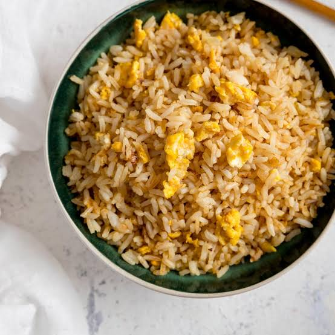

Egg Fried Rice Recipe
Back to Home

Description
Egg Fried Rice is a staple of any asian resturant you may
visit. It has multiple varieties, some with chicken, some
with vegetables. Regardless of how you prefer it, this
dish is sure to excite your tastebuds.
Ingredients
- Eggs
- Day old white rice
- MSG seasoning
- Diced Onions
- Garlic Powder
- Vegetable Oil
Steps
- Put 2 tablespoons of vegetable oil
- Pour white rice in pot
- Pour stirred egg yolk over
- step 4 - i don't feel like doing actual steps for odin project
- step 5